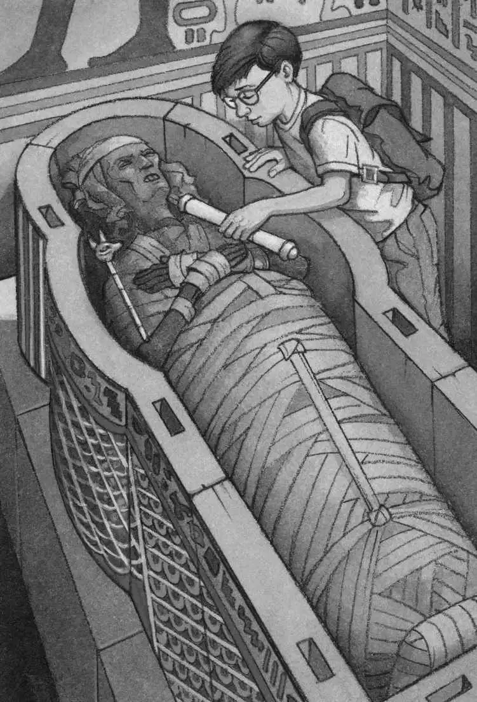

A real mummy, Jack thought.
Bandages were still wrapped around the mummy’s skull, but most of the bandages had fallen away from the face.
It was Hutepi. Queen of the Nile.
Hutepi’s mummy wasn’t beautiful. It had broken teeth, little wrinkled ears, and a squashed nose. Its flesh had withered. Its eyes were hollow sockets.
The rotting bandages on the mummy’s body were coming off. Jack could see bones.
“Oh, gross!” cried Annie. “Let’s go!”
“No,” said Jack. “It’s interesting.”
“Forget it!” said Annie. She started out of the room.
“Wait, Annie.”
“Come on, Jack. Hurry!” cried Annie. She was standing by the door.
Jack pulled out the Egypt book and flipped to a picture of a mummy. He read aloud:
Ancient Egyptians tried to protect the body so it would last forever. First it was dried out with salt.
“Ugh, stop!” said Annie.
“Listen,” said Jack. He kept reading:
Next it was covered with oil. Then it was wrapped tightly in bandages.
The brain was removed by—

“Yuck! Stop!” cried Annie. “Good-bye!” She dashed out of the room.
“Annie!” called Jack. “We have to give her the Book of the Dead!”
But Annie was gone.
Jack reached into his pack. He pulled out the scroll and the scepter. He put them next to the mummy’s skull.
Was it just his imagination? Or did a deep sigh seem to shudder throughout the room? Did the mummy’s face grow calmer?
Jack held his breath as he backed out of the mummy room. He hurried through the boat room and headed down the stairs.
At the bottom of the stairs, Jack heaved his own sigh, a sigh of relief.
He looked down the hallway. It was empty.
“Hey! Annie! Where are you?” he said.
No answer.
Where in the world was Annie?
Jack started down the hallway. “Annie!” he called.
Had she run out of the pyramid? Was she already outside?
“Annie!”
“Help, Jack!” came a cry. The voice sounded far away.
It was Annie! Where was she?
“Help, Jack!”
“Annie!”
Jack started to run along the shadowy hallway.
“Help, Jack!” Her cry seemed fainter.
Jack stopped.
He was running away from her voice.
“Annie!” he called. He went back toward the burial chambers.
“Jack!” Her voice was louder.
“JACK!”
Jack climbed the stairs. He went back into the boat room. He looked around at the furniture, the musical instruments, and the boat.
Then he saw it. There was another door! It was right next to the door he had just come through!
The other door was open.
Jack dashed through it. He found himself at the top of some stairs.
They were just like the stairs outside the other door.
He went down the stairs and into a hallway. It was lit by torches on the wall.
It was just like the other hallway.
“Annie!” he called.
“Jack!”
“Annie!”
“Jack!” Annie was running through the hallway toward him. She crashed into him.
“I was lost!” she cried.
“I think this is one of those false passages built to fool the tomb robbers,” said Jack.
“A false passage?” said Annie, panting.
“Yeah, it looks just like the other hallway,” said Jack. “We have to go back into the boat room and out the right door.”
Just then they heard a creaking noise.
Jack and Annie turned around. They looked up the stairs.
They watched in horror as the door slowly creaked shut.
A deep sound rumbled in the distance and all the torches went out.